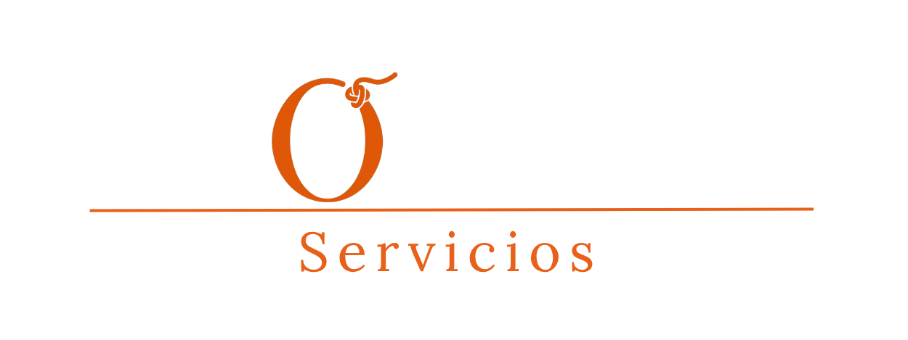

CeroEnredos Publisher
Internal tool to publish CeroEnredos brand videos to its own TikTok account.
Herramienta interna para publicar los videos de la marca en su propia cuenta de TikTok.
1. Connect. The account owner signs in with TikTok (Login Kit) and authorizes the CeroEnredos account.
2. Prepare. The owner selects a finished vertical video and writes its caption.
3. Publish. The tool sends the video to the authorized account through the Content Posting API.
Connect TikTok account
This tool is for internal use by the CeroEnredos account owner only. It does not read or store data from other TikTok users.